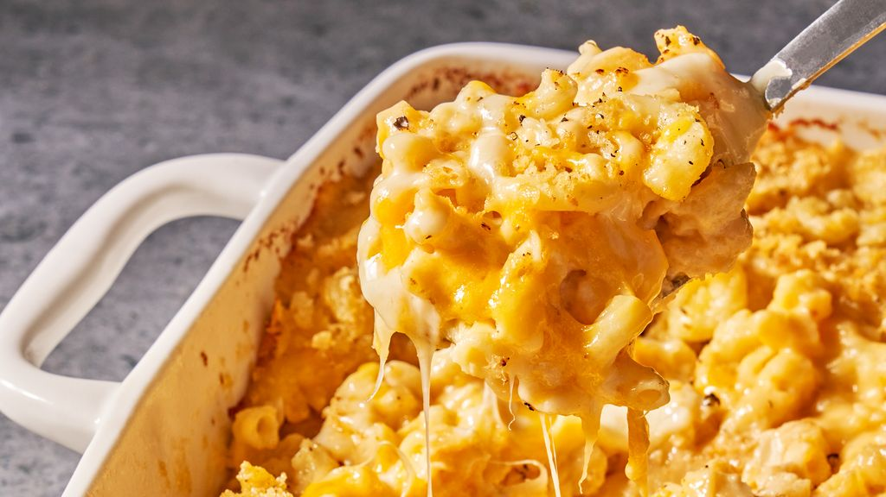

Mac & Cheese

Mac & Cheese
Indulge in creamy comfort with our classic mac and cheese recipe. Perfectly cheesy and utterly irresistible, this dish brings the ultimate satisfaction to your taste buds. Learn how to create the creamiest, cheesiest mac and cheese right at home with our step-by-step guide. It's the ultimate comfort food for all ages.
Ingredients
- 1/2 c. (1 stick) butter, plus more for baking dish
- Kosher salt
- 1 lb. elbow macaroni
- 1/2 c. all-purpose flour
- 5 c. whole milk
- 1 tsp. mustard powder
- 12 oz. shredded cheddar (about 3 c.)
- 8 oz. shredded Gruyère (about 2 c.)
- 3 oz. finely grated Parmesan (about 1 1/2 c.), divided
- 1 c. panko bread crumbs
- 3 tbsp. extra-virgin olive oil
Steps
Directions
- Preheat oven to 375°. Grease a 13"x9" baking dish with butter. In a large pot of boiling salted water, cook macaroni, stirring occasionally, until al dente, 5 to 6 minutes. Drain.
- In a large saucepan over medium heat, melt 1 stick butter. Sprinkle flour over and cook, stirring, until slightly golden, 2 to 3 minutes. Pour in milk and whisk until combined. Add mustard powder; season with salt and pepper. Bring to a simmer over medium-high heat and cook, stirring, until sauce starts to thicken, about 2 minutes.
- Remove pan from heat and whisk in cheddar, Gruyère, and 1 cup Parmesan until melted and smooth. Stir in macaroni and transfer to prepared dish.
- In a small bowl, combine panko, oil, and remaining 1/2 cup Parmesan. Sprinkle over macaroni; season with more pepper.
- Bake mac and cheese until bubbly and golden, 25 to 30 minutes. Let cool 10 minutes.